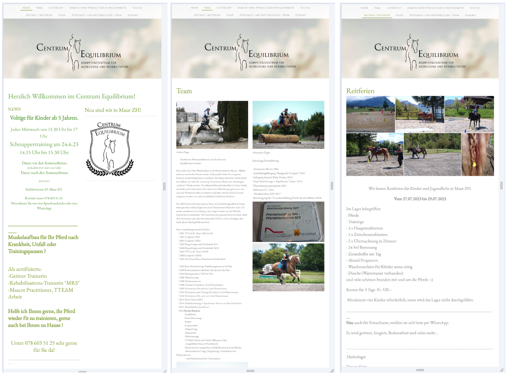
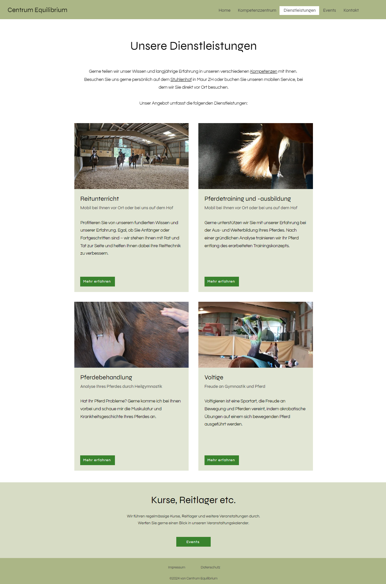

Centrum Equilibrium
2024information architecture, web design, WIX
Background
In my free time, I helped two long-time friends, who run an equestrian center, to redesign and develop their outdated website. This experience allowed me to practice web design and learn more about modern website builders.
Since completing the project, I continue to manage and maintain the website, gaining experience in online marketing topics such as SEO. I experiment with tools like Google Analytics and Google Search Console to enhance my skills.
Initial situation
The old website was created using Jimdo. Over the years, it had grown continuously, leading to an outdated information architecture and confusing navigation. Additionally, there were many outdated contents, and the site no longer met current needs. Below are some screenshots of the original website:
Concept
In collaborative sessions with the clients, we developed the concept for the new website. The clients emphasized the importance of a clear and organized website that better showcases their diverse competencies, which were inadequately highlighted on the old site. They also wanted the offered services to be prominently and attractively presented. Additionally, it was important for them to promote events such as courses and riding camps on the website.
We gathered the individual content on Post-it notes and then used open card sorting to design the information architecture of the new website.

Website Development
Once the concept was finalized, I evaluated different website builders to select the most suitable new provider with the clients. Ultimately, the decision was made to use WIX.
The creation of the individual pages proceeded swiftly due to the previously established concept. Additional sessions were held to take photos for the new website and to write and review the content. The design was crafted in natural green tones, as requested by the clients.
Finally, the website's accessibility and SEO were optimized.
The completed website can be viewed at the following link: https://www.centrum-equilibrium.ch/
